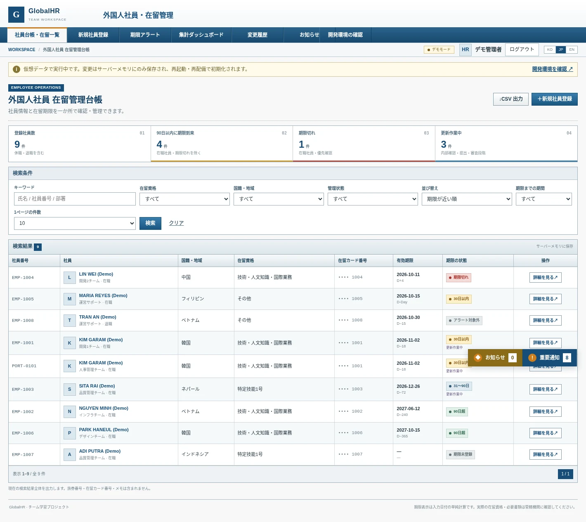
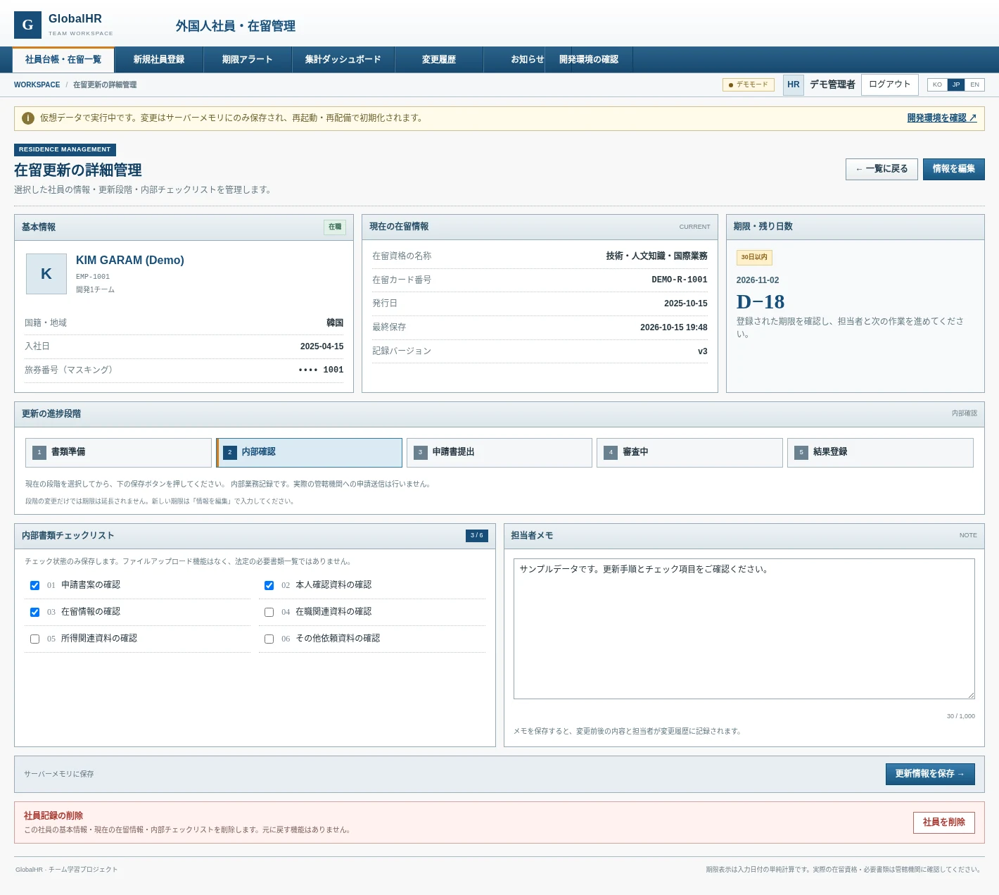
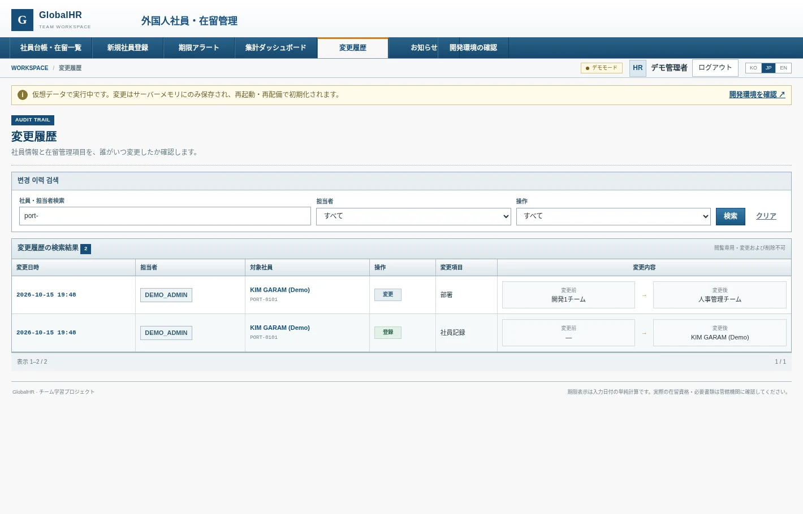

社員マスタのCRUD
社員の登録・編集・削除を共通の検証ルールで処理。社員番号の重複判定、入力エラーのフィールド表示、登録内容の保持に対応。
EmployeeService / EmployeeValidatorENGINEERING FOR BETTER PEOPLE OPERATIONS.
外国人社員の情報・在留期限・更新進捗を一元管理。検索、アラート、変更履歴、データ整合性まで考慮したWebアプリケーションの開発事例です。

社員情報から更新履歴まで、業務データをひとつにつなぐ。
外国人社員の基本情報と在留資格・有効期限・更新業務を一画面から追跡します。期限の自動分類、更新チェックリスト、操作履歴に加え、データ更新時の競合や不整合まで考慮しました。
fix/project-integration画面の見栄えだけでなく、データ処理と業務フローまで。
社員の登録・編集・削除を共通の検証ルールで処理。社員番号の重複判定、入力エラーのフィールド表示、登録内容の保持に対応。
EmployeeService / EmployeeValidator期限切れ・30日以内・90日以内などを日付に基づいて分類。30/60/90日の絞り込みと、在職者を対象とする期限判定を実装。
期限フィルター / 状態計算在留更新を5段階の進捗として管理し、6項目の書類チェックと担当者メモを保存。更新状態の変更履歴も連動して記録。
5ステップ / 6チェック誰が・いつ・何を変更したかを記録。社員情報・更新状態の変更を確認でき、機密番号は履歴に複製せず変更有無のみを残す設計。
監査ログ / マスキングキーワード、国籍、在留資格、期限状態などで絞り込み。10/20/50件の表示切替とソート、条件付きCSV一括出力をサポート。
10 / 20 / 50件 · CSV期限状況・国籍別分布・優先対応社員を管理画面に可視化。表示値は実際のレコードからサーバー側で集計。
集計 / 優先対応ResourceBundleベースのメッセージ辞書で主要画面を3言語対応。ポートフォリオの画面画像もJP/KOを切り替え表示。
i18n / 3言語row_versionを使った競合チェック、CSRF対策、POSTによる保存・削除、JDBCトランザクションによる業務データと履歴の同時更新。
競合防止 / rollback面接で実装の意図を説明できる、3つのテーマ。
社員情報・在留情報・更新進捗と監査履歴を同じJDBC Connectionで保存。途中で監査ログの書き込みに失敗した場合は業務データもrollbackし、部分保存を防ぎます。
EmployeeDao.*WithAudit / AuditDaorow_versionを使った楽観的ロックで編集競合を検知。既に更新された社員データを古い画面から保存しようとした場合は409を返し、最新版の再読み込みへ誘導します。
EmployeeService / row_version必須項目・日付・文字数・重複パラメータをサーバー側で検証。直接Serviceを呼ぶ経路でも同じルールを適用し、CSVの出力内容は検索条件に連動させています。
EmployeeValidator / Csv / Web
5段階の進捗、書類チェック、メモ入力をひとつの画面で管理。

担当者と変更対象、変更前後の値を追跡可能。
表示、業務ロジック、永続化を分離。
DB接続なしで画面・処理を確認するためのDemo Repositoryも用意。DemoとOracleの切替は明示的です。
コードとドキュメントで確認できた採用技術です。
社員・在留・更新情報をひとつのサービス経由で処理し、DB保存時は監査履歴との整合性を守る構成です。
右上のJP / KOを選ぶと、画面画像も対応する言語に切り替わります。
社員の在留資格、有効期限、絞り込み条件を一覧で管理する画面です。
各画像は最終JSPコードをテスト用データでレンダリングした静的な記録です。実際のTomcat/Oracle接続の撮影ではありません。
確認できた内容と、まだ確認できない内容を明確に分けています。
同梱レポートに記載された合計264件の検証チェック。Oracle実DBやTomcat統合環境での264件の合格を意味しません。
本ページは静的ポートフォリオです。アプリの実動作を試すには、安全な認証・接続設定を行ったTomcat/Oracleサーバーを別途公開する必要があります。